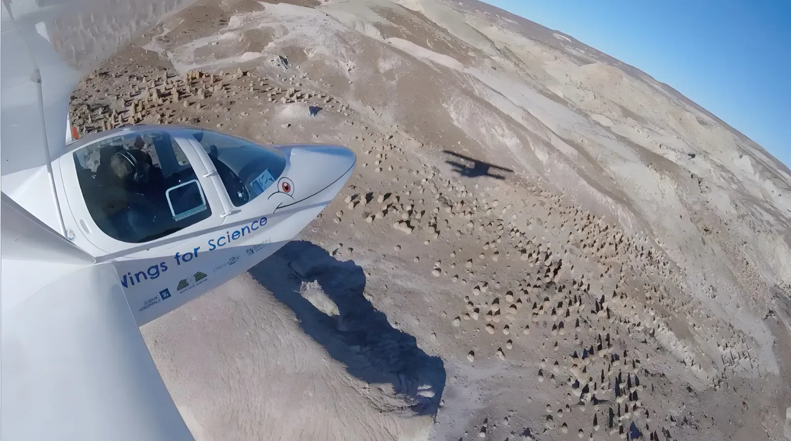

Nos actions · 01 — Campagne scientifique
Des données de terrain au service de la recherche
Campagne scientifique
En partenariat avec des entités de recherche et de conservation, nous avons produit des données et des méthodes nouvelles pour appuyer leurs démarches scientifiques. Nos données aériennes ont servi directement à des publications dans des revues à comité de lecture.
34missions scientifiques
5continents
5modèles 3D interactifs
8publications et communications
Carte interactive
Nos missions à travers le monde
Cliquez sur un point pour découvrir la mission, son partenaire et ses résultats.
Mission scientifique Tour du monde (Pipistrel Virus) Traversée du Pacifique (bateau) Traversée des Amériques (Super Pétrel)
Missions réalisées
Liste complète des 34 missions
| Période | Lieu | Partenaire scientifique | Mission scientifique | Objectif |
|---|
Modèles numériques de terrain
Modèles 3D réalisés pour la recherche
Cliquez sur chaque modèle pour l'explorer en 3D interactive, ou visionner la vidéo de présentation.
Publications scientifiques
Nos données dans des revues scientifiques
Les données acquises lors de nos expéditions ont contribué à des publications dans des revues scientifiques internationales.
Attestations de nos partenaires

Nos actions · 02